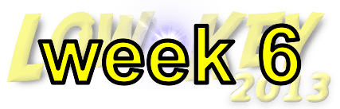
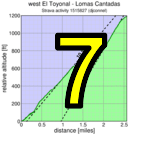
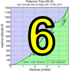
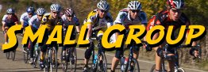

|
 |  |
RSVP for today's climb after the previous week's climb!
| Starting groups are posted! Groups start every 3 minutes (approximately). |
| results? | right here! |
| profile |  |
| distance | 4.79 miles (7.7 km) |
| climbing | 1233 ft (375 meters) |
| grade | 4.88% |
| where? | see below |
| when? | 09 Nov 2013 |
| what time | registration 9:00 to 10:00 climb starts @ 10:10 |
| RSVP | check back later! |
| waiver | Please fill one out before the climb! |
| how? |  |
| how much? | $10 (free for juniors and those with volunteer credit) |
| why? | Ask not why; just do! |
| coordinator | |
| volunteers | sign up! |
| aerial view | Will Van Kaenel, Google Earth |
| weather | Weather Underground |
| deja-vu? | New! |
| BikeMap | |
Sorry, folks! Our insurance requires all riders wear helmets during the climb, and we follow the USA Cycling rule against ear buds or other head phones. Rock to tunes before the climb, perhaps, but we need riders to pay attention to what's happening during the climb...
If you're driving to the start, a good parking option is this lot: start area parking lot. There's plenty of space here and it's a very short distance from the ride start.
The start itself will be here: start area. There's a dirt pull-out where we can stage groups. Groups will be assigned by Friday based on this or prior year scores. For riders doing their first Low-Key, we use other criteria (see below).
The course itself is described here: BikeMap of course. It goes from east to west.
Another good option is to ride to the start, using the pass for warm-up, from Livermore. Then afterwards you can descend back to Livermore.
There will likely be 5 groups, with men and women mixed together. The following guidelines apply, based on analysis of Low-Key times and scores:
Tandems and hybrid-electrics will start separately. We'll also have a volunteer group which will start early.
Volunteers make Low-Key tick! Without them, we no longer function. Please sign up for any week in the series using our volunteer form! Thanks!!!
Low-Key is all about a group of friends riding up a hill together. It's like any other informal group ride, except we time you to the top and report the results on our web site. But we have no road closures, no lead vehicle, no follow vehicle. We are traffic, sharing the roads with other traffic, following the laws and courtesy which applies to traffic. Think of it as a human-assisted Strava. We're each responsible for our own actions out there, on and off the bike, both as users of the road as as courteous visitors to the neighborhoods we pass through. "Ceci n'est pas un race".